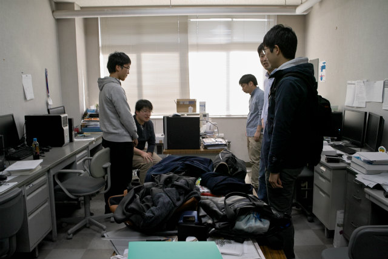
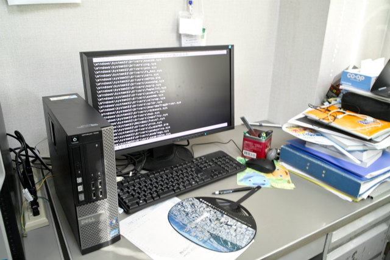
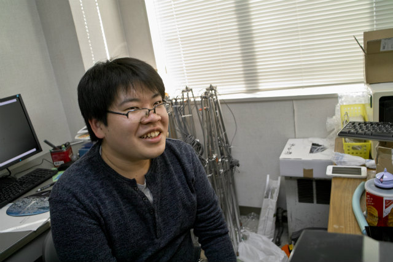
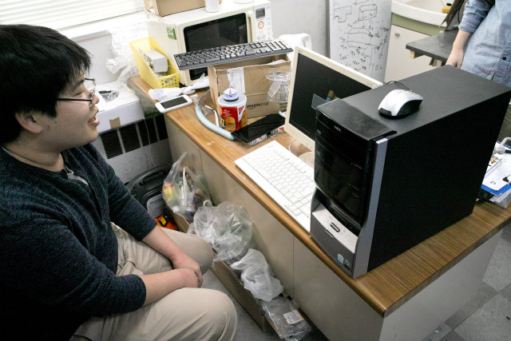
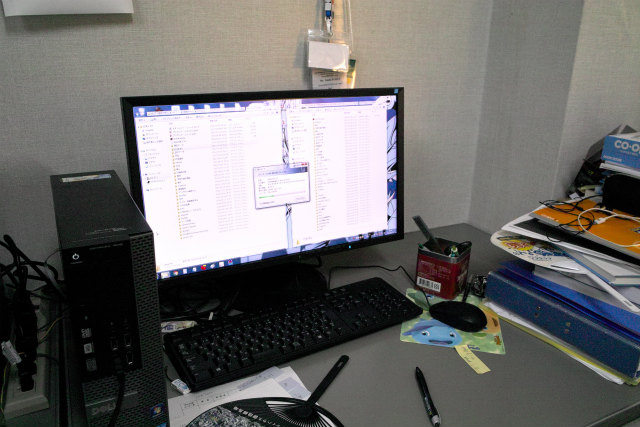

| ・ 20万ファイル (H29.11.10) | |||
去年もこの時期ですね．M2のF井くんが20万ファイルを同じフォルダに生成して無事システムが落ちました．修論の最終結果を出すために，ガンガン計算させたら痛恨のプログラムミス．まぁ12月の修論審査願い申請に向けてPCトラブルが起きそうな時期です．でも大事な議論をする11月なのでかなりの痛手です．データが無事だったのはせめてもの救い． |
|||
|

集まる野次馬 |

アカン画面でてる | ||
|

私のファイル数は20万です |

Y名田くんPCをバックアップで準備 | ||
|
金，土，日と |

ひたすらファイルを消す日々 | ||